S-Tec-Business-Site-Overview
에스텍 그룹 사업장 현황 지도
사용자 매뉴얼
User Manual
에스텍 그룹 사업장 현황 지도 — 사용 방법 (v1.9.0)
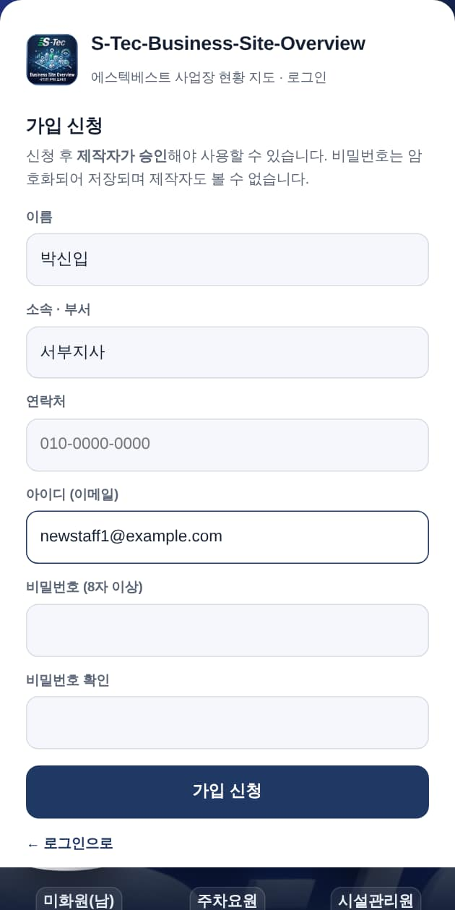
구분 | 내용 |
|---|---|
대상 | 프로그램을 쓰는 모든 사용자 |
프로그램 버전 | v1.9.0 |
주소 | https://sadness500-boop.github.io/s-tec-business-site-overview/ |
차례
01 최신 버전 안내 (v1.9.0)
02 12개 프로그램 공통 화면
03 시작하기
04 메인 화면 둘러보기
05 사업장 지도
06 사업장 정보 창
07 그 밖의 기능
08 자주 묻는 질문
1. 최신 버전 안내 (v1.9.0)
요점 이 매뉴얼은 v1.9.0 기준 · 이전 매뉴얼 v1.9.0 이후 바뀐 점 · 최신 화면 사진
이 매뉴얼은 에스텍 그룹 사업장 현황 지도 v1.9.0 기준입니다. 이전 매뉴얼(v1.9.0) 이후 바뀐 점을 아래에 모았고, 각 장의 설명은 이전 매뉴얼 내용을 바탕으로 합니다. 2026년 11월 22일에 12개 프로그램의 상단 · 하단 · 글씨체 · 화면 배치를 통일했습니다(「12개 프로그램 공통 화면」 장).

그림 1. v1.9.0 메인 화면
바뀐 점 |
|---|
사용자 매뉴얼 최신 버전으로 다시 작성(Word · PPT · PDF · 웹), 제작자 관리매뉴얼 보관함 올리기 · 삭제(제작자만), 기준정보 조직 구분 추가 |
함께 쓰는 사이트 → 메인 프로그램 카드, 하단 좌·우 배치 · 제작자/날짜 간격, 근태관리 상단 선, 결과 칸 위로 |
에스텍 그룹 기준 · 사업장 목록 기준정보 연동, 글씨체 · 기본 글씨 크기 통일, 하단 서명 반짝임 제거, 빈 공간 없는 메인 화면 배치 |
상단 「The Best Choice」 삭제 · 프로그램명 버튼 높이로 축소, 하단 서명 · 날짜 왼쪽과 같은 글씨체, 하단 불필요 문구 삭제 |
상단·하단 보완 — 모바일 줄바꿈·서명 크기, 원래 Things to enjoy 숨김(함께 쓰는 사이트로 통일), 하단 배경 충돌 수정, 아이콘 늦게 채워지는 프로그램 대응 |
제작자 관리매뉴얼 공개 파일 삭제 — 제작자 전용 비공개 보관함으로 이전 |
상단·하단·함께 쓰는 사이트·프로그램별 사용자 매뉴얼 통일 |
메인화면 관리 범위 — 에스텍 그룹 전체 회사·조직(그룹 → 회사 → 지사·팀) 선택, 숫자·라이브·지도·목록이 범위에 맞게 바뀜 · 권한 수정 창 가림 수정 |
제작자 관리매뉴얼 — 제작자만: 공개 파일·배포본에서 빼고 서버 비공개 보관함(owner-docs)에서 제작자 계정에게만 보기·내려받기 (통합관리시스템 공통) |
공통 상단 버튼(통합관리시스템과 같은 모양·새 아이콘): 사용자 매뉴얼 · 내 정보 · QR · 친구추천 · 화면 크기 · 테마 · 제작자 관리 콘솔(제작자만)/조직관리자 관리콘솔 · 계정 |
회사·조직별 공개 잠금 화면 (소속 조직에 공개되지 않은 프로그램 안내) |
공통 기준정보(회사·조직·사업장) 연결 · 「📂 자료」 엑셀 양식·작성 안내서(PDF)·불러오기 |
5·6단계 — 조회 전용 기기 · 새 기기 승인 안내 · 개별 앱 병행(2026-12-18까지) 안내 |
에스텍 통합 로그인(SSO) 연결 · 「메인」 버튼 추가 |
야간(어두운) 화면에서 내 계정·로그인·관리자 창 글자가 안 보이던 문제 수정 |
에스텍 통합 로그인 연결 + 프로그램별 사용 권한(app-access) |
2. 12개 프로그램 공통 화면
요점 상단: 아이콘 · 에스텍 그룹 · 버전 · 프로그램명 · 기능 버튼 · 하단: 에스텍 그룹 · 프로그램명 | 제작자 · 오늘 날짜 · 같은 아이디로 12개 프로그램 · 📂 자료 — 에스텍 그룹 공통 기준정보
에스텍 운영 및 영업 통합관리 시스템(메인)과 11개 프로그램은 상단 · 하단 모양과 버튼이 모두 같습니다. 한 프로그램에서 익힌 사용법을 다른 프로그램에서도 그대로 쓸 수 있습니다.
상단

그림 2. 상단 — 왼쪽 아이콘 · 에스텍 그룹 · 버전 · 영문 · 한글 프로그램명, 오른쪽 기능 버튼
왼쪽 아이콘을 누르면 프로그램 첫 화면으로 돌아갑니다. 「에스텍 그룹」 옆의 초록 표시는 지금 쓰고 있는 프로그램 버전입니다.
버튼 | 하는 일 |
|---|---|
📘 사용자 매뉴얼 | 이 프로그램 사용자 매뉴얼을 화면에서 보고 Word · PPT · PDF로 내려받기 |
🪪 내 정보 | 내 아이디 · 역할 · 소속 조직 · 관리범위 · 사용기한 확인, 소속 · 연락처 고치기 |
다운로드 QR | 휴대폰 설치용 QR과 앱 내려받기 |
친구 추천 | 프로그램 주소를 동료에게 보내기 |
− 100% + | 화면 크기(글씨 크기) 조절 |
☀ / ☾ / ▣ | 주간 · 야간 · 시스템 화면 |
🛡 관리 콘솔 | 제작자에게는 「제작자 관리 콘솔」, 조직관리자에게는 「조직관리자 관리콘솔」로 보입니다(일반 사용자에게는 안 보임) |
계정(이름) | 로그인 · 로그아웃 · 비밀번호 변경 |
하단

그림 3. 하단 — 왼쪽 「© 에스텍 그룹 · 프로그램명」, 오른쪽 「제작자 | 오늘 날짜」
하단 왼쪽에는 에스텍 그룹과 프로그램 이름이, 오른쪽에는 제작자(Designed & Developed by Rat Rae Choi)와 오늘 날짜가 나옵니다.
사용자 매뉴얼 보기 · 내려받기

그림 4. 📘 사용자 매뉴얼 — 화면에서 바로 보기, 장 목록 · 찾기, Word · PPT · PDF 내려받기
- 상단 「📘 사용자 매뉴얼」을 누르면 이 프로그램 매뉴얼이 화면에 열립니다(메인 프로그램은 통합 매뉴얼).
- 왼쪽 목록에서 장을 고르거나 찾기 칸에 낱말을 적어 찾습니다.
- 위쪽 Word · PPT · PDF 버튼으로 파일을 내려받습니다.
📂 자료 — 에스텍 그룹 공통 기준정보
화면 왼쪽 아래 「📂 자료」에서 회사(계열사) · 조직(본부 · 지사 · 지점) · 사업장을 엑셀로 넣습니다. 한 번 넣으면 12개 프로그램이 함께 씁니다. 사업장 목록은 에스텍 그룹 기준이라 다른 계열사 사업장도 함께 보입니다.
- 「📂 자료」 → 「입력 양식(엑셀) 받기」 또는 「현재 자료 받기」
- 엑셀의 「회사 · 조직 · 사업장」 시트에 한 줄에 하나씩 적기(머리글에 * 가 있는 칸은 꼭)
- 「엑셀 불러오기」 → 파일 고르기 → 미리보기 확인 → 「적용」
도움말 저장은 제작자 · 관리자만 할 수 있습니다. 실제 회사 · 지사 이름(예: 에스텍베스트 동부지사)은 서류에 그대로 쓰입니다. |
메인 프로그램과 함께 쓰는 사이트
메인 프로그램 첫 화면에는 12개 프로그램과 함께 「오늘의 뽑기판 · 팔도 제철맛길 · 팔도 축제길」 카드가 있습니다. 카드를 누르면 다시 로그인하지 않고 바로 열립니다.
3. 시작하기
요점 여는 방법 — 셋 중 편한 것 하나 · 안드로이드 앱 설치 (처음 한 번) · 제작자가 로그인 기능을 켜 두면, 프로그램을 열 때 로그인 화면 이 먼저 나옵니다. · 비밀번호를 잊었을 때
여는 방법 — 셋 중 편한 것 하나
기기 | 여는 법 |
|---|---|
PC (인터넷 창) | 주소창에 https://sadness500-boop.github.io/S-Tec-Business-Site-Overview/ 입력 → 열리면 Ctrl + D 로 즐겨찾기 |
안드로이드 휴대폰 | 제작자가 보내 준 앱 파일(S-Tec-Business-Site-Overview_v1.7.0.apk)을 눌러 설치 → 홈 화면 아이콘으로 실행 |
아이폰 | 사파리로 위 주소를 열고 → 아래쪽 공유 버튼 → 홈 화면에 추가 → 홈 화면 아이콘으로 실행 |
안드로이드 앱 설치 (처음 한 번)
- 카톡 등으로 받은 apk 파일 을 누릅니다.
- "출처를 알 수 없는 앱" 안내가 나오면 설정 → 이 출처 허용 을 켜고 뒤로 돌아와 설치 를 누릅니다.
- Play 프로텍트 경고가 나오면 무시하고 설치 (또는 세부정보 → 설치)를 누릅니다.
- 처음 열 때 위치 권한을 물으면 앱 사용 중에만 허용 을 누릅니다. 그래야 내 위치가 지도에 나옵니다.
- 새 버전을 받으면 지우지 말고 그대로 덮어 설치 합니다.
로그인
제작자가 로그인 기능을 켜 두면, 프로그램을 열 때 로그인 화면 이 먼저 나옵니다.

그림 5. 화면
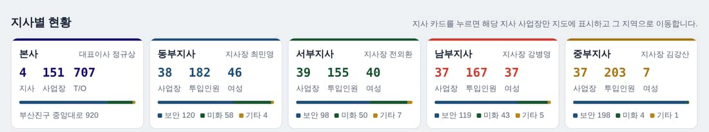
그림 6. 화면
그림 1. 로그인 · 가입 신청
- 처음이면 처음이세요? 가입 신청 → 이름·소속·연락처·이메일·비밀번호(8자 이상)를 쓰고 가입 신청 .
- 승인 대기 중 화면이 나오면 제작자(또는 관리자)에게 승인을 부탁합니다. 승인되면 다시 확인 을 누릅니다.
- 다음부터는 아이디(이메일)·비밀번호 로 로그인합니다. 이 기기 이름 에는 "회사 PC", "내 휴대폰"처럼 적어 주세요(접속기록에 나옴).
- 같은 아이디로 PC·휴대폰·태블릿 어디서든 로그인할 수 있습니다.

그림 7. 화면

그림 8. 화면
그림 2. 승인 대기 중 · 임시 비밀번호로 로그인했을 때
비밀번호를 잊었을 때
- 로그인 화면 비밀번호를 잊었어요 → 가입한 이메일로 재설정 메일 받기 → 메일의 링크를 누르면 새 비밀번호 화면이 열립니다.
- 메일이 안 오면 제작자에게 임시 비밀번호 를 요청하세요. 임시 비밀번호로 로그인하면 새 비밀번호를 정하는 화면 이 나옵니다.
이런 화면이 나오면
화면 | 뜻 · 할 일 |
|---|---|
⏳ 승인 대기 중 | 아직 승인 전. 제작자에게 승인 요청 → 다시 확인 |
📅 사용기한 만료 | 정해진 사용기간이 끝남. 제작자에게 연장 요청 |
⛔ 사용이 중지된 계정 | 접속이 막힘. 제작자에게 문의 |
📵 이 기기는 사용 제한 | 이 기기만 막힘(예: 분실 신고). 다른 기기를 쓰거나 제작자에게 문의 |
🛠️ 프로그램 점검 중 | 자료 정리 등으로 잠시 잠금. 잠시 후 다시 확인 |
📶 인터넷 연결 필요 | 로그인 확인에 인터넷 필요. 마지막 확인 후 24시간까지는 인터넷 없이도 열림 |
4. 메인 화면 둘러보기
요점 현장 라이브 · 직종별 보기 (3D 피규어) · 보안요원·미화원·주차요원·시설관리원·안내사원·사무관리 피규어를 누르면 그 업무가 있… · 지사별 현황

그림 9. 화면
그림 3. 메인 화면 (PC)
상단 버튼
버튼 | 하는 일 |
|---|---|
v1.7.0 | 지금 쓰는 프로그램 버전 |
🗺 지도로 | 아래 사업장 지도로 바로 이동 (PC) |
다운로드 QR | 사이트 주소 QR — 휴대폰으로 찍어 북마크·홈 화면에 추가 |
친구초대 | 동료에게 사이트 주소 보내기(주소 복사 · 카톡·문자 공유) |
내 이름 (●) | 내 계정 — 정보 수정, 비밀번호 변경, 지금 동기화, 로그아웃 |
어둡게 / 밝게 | 화면 테마 바꾸기 (밤에는 어둡게가 편함) |
현장 라이브

그림 10. 화면
그림 4. 현장 라이브
- 지금이 주간인지 야간인지 , 지금 근무 중인 현장 수와 인원을 알려 줍니다.
- 오늘의 현장 이 6초마다 바뀌며(마우스를 올리면 멈춤) 사업장을 하나씩 소개합니다. 지도에서 보기 를 누르면 그 사업장으로 이동합니다.
- 최장수 고객사, 가장 큰 현장, 본사에서 가장 먼 현장, 내 위치에서 가장 가까운 현장 을 보여 줍니다.
직종별 보기 (3D 피규어)
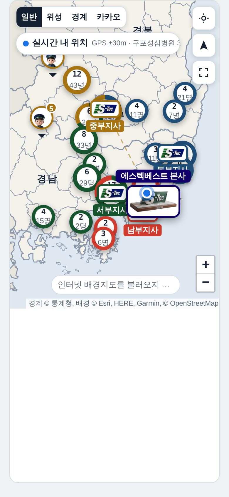
그림 11. 화면
그림 5. 직종별 보기 — 피규어를 누르면 그 업무 사업장만 지도에 표시
보안요원·미화원·주차요원·시설관리원·안내사원·사무관리 피규어를 누르면 그 업무가 있는 사업장만 지도와 목록에 남습니다. 같은 피규어를 한 번 더 누르면 다시 전체가 보입니다.
지사별 현황
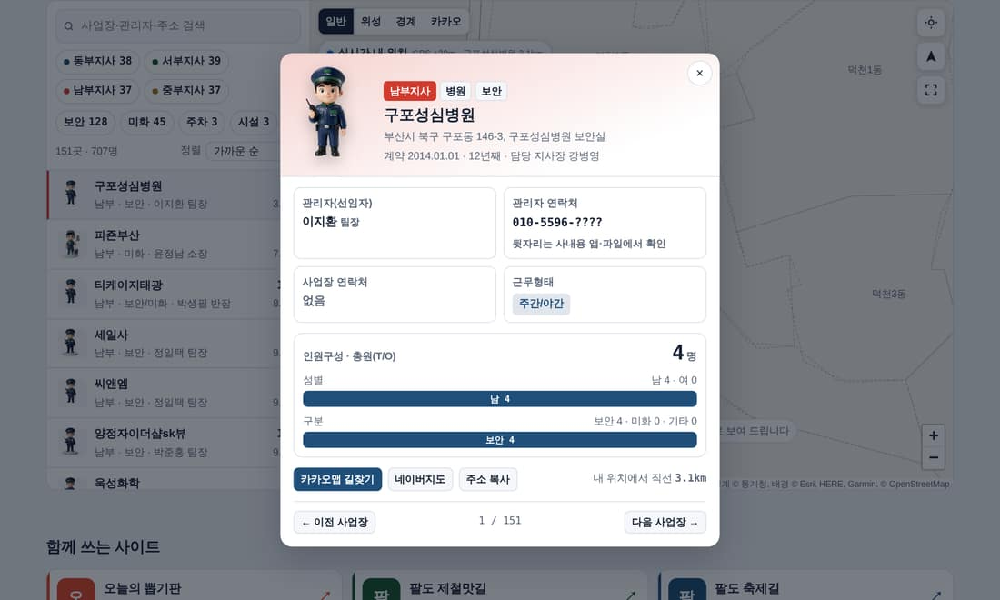
그림 12. 화면
그림 6. 지사별 현황 카드
본사와 4개 지사의 사업장 수·투입인원·여성 인원·업무 구성을 보여 줍니다. 지사 카드를 누르면 그 지사 사업장만 지도에 남고 그 지역으로 이동합니다. 휴대폰에서는 카드를 옆으로 밀어 봅니다.
5. 사업장 지도
요점 지도 보는 법 · 검색 · 필터 · 정렬 · 지도 종류 (지도 왼쪽 위) · 인터넷 배경지도를 불러오지 못하면 "내장 행정경계 지도로 보여 드립니다" 안내와 함…

그림 13. 화면
그림 7. 사업장 지도 (PC) — 왼쪽 목록, 오른쪽 지도
지도 보는 법
- 동그란 핀 하나가 사업장 하나입니다. 핀 안 그림은 주된 업무 (보안·미화 등), 테두리 색은 지사 (범례 참고), 작은 숫자는 인원 입니다.
- 멀리서 보면 가까운 사업장끼리 숫자 묶음 (예: 6 / 21명 = 사업장 6곳 · 21명)으로 합쳐집니다. 누르거나 확대하면 풀립니다.
- S-Tec 명판 이 본사, 지사 이름표가 4개 지사 사무실입니다. 점선은 본사와 지사를 잇는 선입니다.
검색 · 필터 · 정렬

그림 14. 화면
그림 8. "대학"으로 검색한 결과
- 왼쪽 위 검색칸 에 사업장 이름·관리자 이름·주소 일부를 씁니다. (예: 대학, 온산, 김○○)
- 아래 지사 단추 (동부·서부·남부·중부)와 업무 단추 (보안·미화·주차·시설)를 눌러 골라 볼 수 있습니다. 다시 누르면 풀립니다.
- 정렬 : 가까운 순(내 위치 기준) · 지사·이름순 · 인원 많은 순 · 계약 오래된 순.
- 목록의 사업장을 누르면 지도가 그 사업장으로 이동하고 사업장 정보 창 이 열립니다.
지도 종류 (지도 왼쪽 위)
단추 | 보이는 지도 |
|---|---|
일반 | 기본 지도 |
위성 | 위성 사진 — 공장·건물 모양을 확인할 때 |
경계 | 시·군·구·읍·면·동 경계만 그린 가벼운 지도 (인터넷이 느릴 때) |
카카오 | 카카오맵 — 익숙한 길·건물 이름으로 볼 때 |
인터넷 배경지도를 불러오지 못하면 "내장 행정경계 지도로 보여 드립니다" 안내와 함께 경계 지도로 자동으로 바뀝니다.
내 위치 · 따라가기 · 전체 보기 (지도 오른쪽 위)
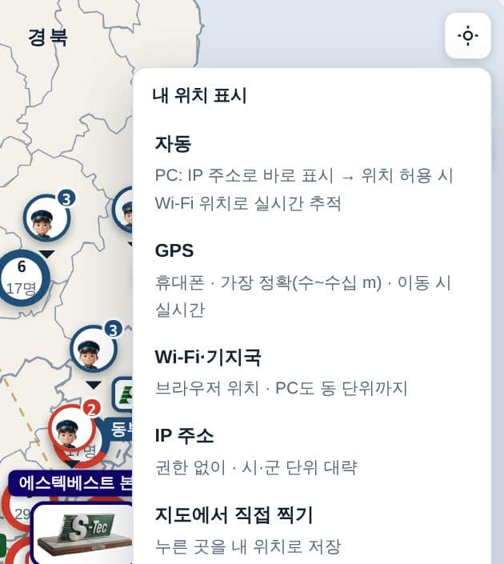
그림 15. 화면
그림 9. 내 위치 표시 방법 고르기
단추 | 하는 일 |
|---|---|
◎ 내 위치 | 누르면 방법을 고르는 창이 나옵니다. 자동 (권장) · GPS (휴대폰, 가장 정확, 이동 시 실시간) · Wi-Fi·기지국 (PC도 동 단위) · IP 주소 (권한 없이, 시·군 단위 대략) |
▲ 따라가기 | 걸어가거나 차로 움직일 때 내 위치를 지도 가운데에 계속 둡니다. 지도를 손으로 움직이면 꺼집니다 |
⛶ 전체 보기 | 모든 사업장이 한 화면에 들어오게 지도를 맞춥니다 |
처음 쓸 때 위치 권한을 물으면 "허용"을 눌러야 합니다. 위치는 내 기기에서만 쓰이고 서버에 올라가지 않습니다.

그림 16. 화면

그림 17. 화면
그림 10. 휴대폰 메인 · 휴대폰 지도
6. 사업장 정보 창
요점 지도의 핀이나 목록의 사업장을 누르면 열립니다. · 본사 · 지사 창 · 지도에서 S-Tec 명판(본사) 이나 지사 이름표 를 누르면 대표 전화·팩스, 지사…
지도의 핀이나 목록의 사업장을 누르면 열립니다.
그림 18. 화면
그림 11. 사업장 정보 창 (PC)
항목 | 내용 |
|---|---|
맨 위 | 지사 · 업종 · 업무 표시, 사업장 이름, 주소, 계약일(몇 년째), 담당 지사장 |
관리자(선임자) | 현장 관리자 이름과 직책 |
관리자 연락처 | 전화 단추로 바로 전화, 복사 단추로 번호 복사 |
사업장 연락처 | 사업장 대표 번호 (없으면 "없음") |
근무형태 | 예: 4조2교대, 3조2교대, 격일제, 주간 |
인원구성 · 총원(T/O) | 총원, 남·여, 보안·미화·기타 인원을 막대로 표시 |
비고 | 참고 사항 (예: 주차 겸무) |
아래 단추 | 카카오맵 길찾기 · 네이버지도 · 주소 복사 , 내 위치에서 직선거리, ← 이전 사업장 / 다음 사업장 → |
도움말 연락처 뒷자리가 ???? 로 보여요 인터넷 주소(GitHub)로 여는 공개판 은 개인정보 보호를 위해 휴대폰 번호 뒷자리 4개를 ???? 로 가렸습니다. 전체 번호는 제작자가 사내에서만 나눠 주는 사내용 앱·파일 에서 확인하세요. 사내용 앱·파일은 외부로 보내지 마세요. |

그림 19. 화면
그림 12. 휴대폰 정보 창
본사 · 지사 창
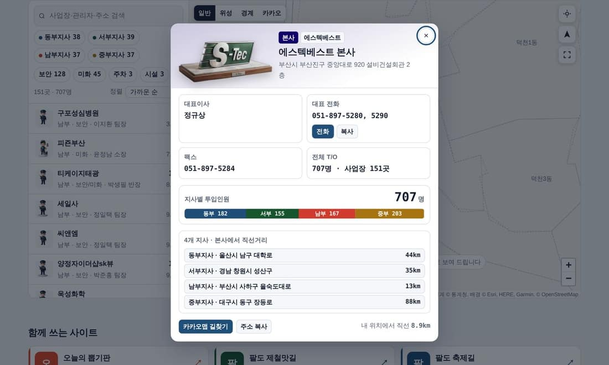
그림 20. 화면
그림 13. 본사 창 — 대표 전화, 지사별 투입인원, 본사에서 지사까지 거리
지도에서 S-Tec 명판(본사) 이나 지사 이름표 를 누르면 대표 전화·팩스, 지사별 투입인원, 거리 등을 보여 줍니다.
7. 그 밖의 기능
요점 다운로드 QR · 친구초대 · 화면 테마 (어둡게 / 밝게) · 상단 어둡게 를 누르면 어두운 화면, 다시 누르면 밝게 로 돌아옵니다. · 함께 쓰는 사이트 · 인트로 영상
다운로드 QR · 친구초대
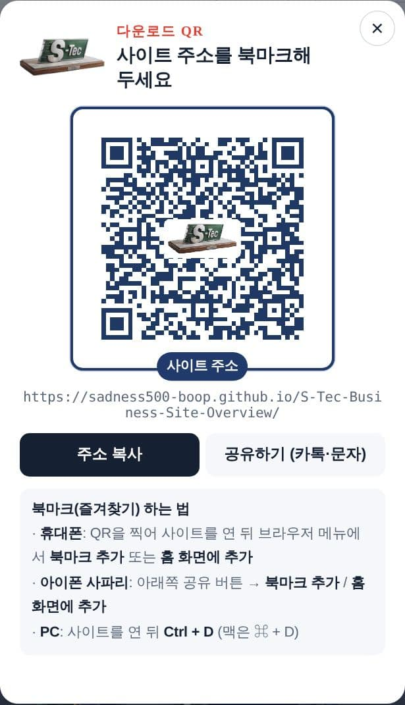
그림 21. 화면
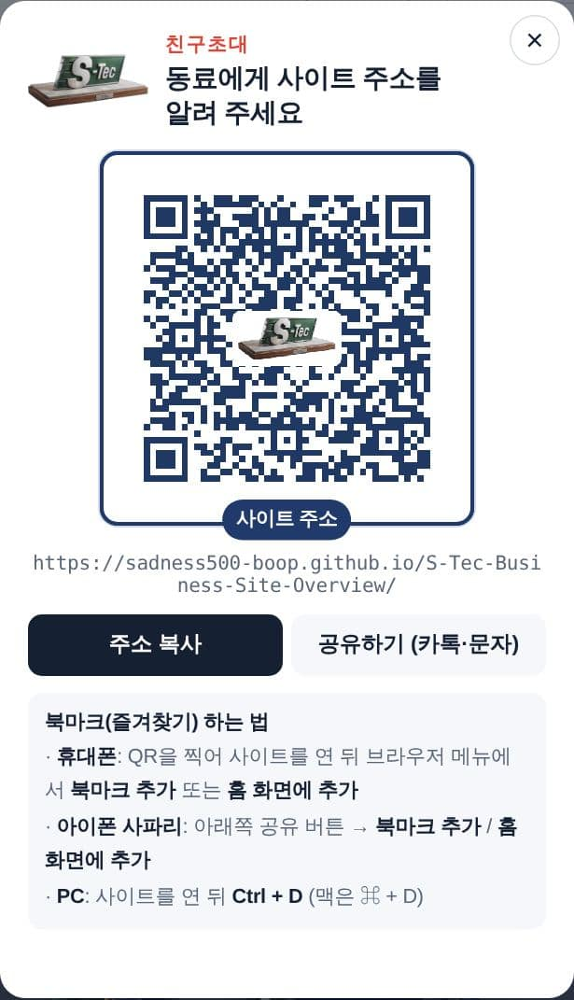
그림 22. 화면
그림 14. 다운로드 QR · 친구초대
- 다운로드 QR : 사이트 주소 QR이 나옵니다. 휴대폰 카메라로 찍어 열고 북마크 추가 또는 홈 화면에 추가 하세요. PC는 Ctrl + D.
- 친구초대 : 주소 복사 또는 공유하기(카톡·문자) 로 동료에게 주소를 보냅니다. 동료도 처음에는 가입 신청 → 승인 을 거쳐야 볼 수 있습니다.
화면 테마 (어둡게 / 밝게)
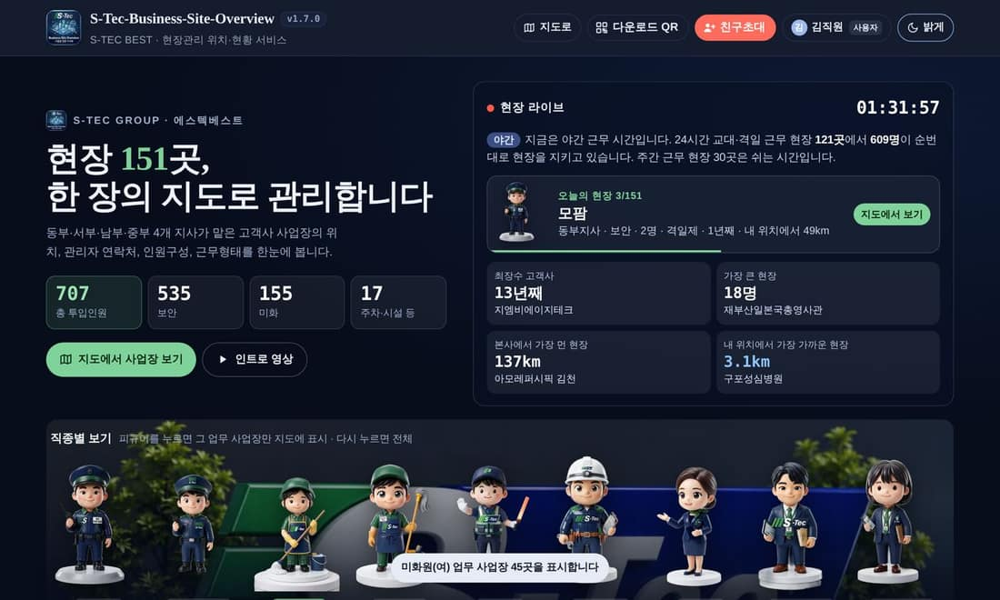
그림 23. 화면
그림 15. 어둡게 테마
상단 어둡게 를 누르면 어두운 화면, 다시 누르면 밝게 로 돌아옵니다. 고른 테마는 같은 아이디로 로그인한 다른 기기에도 다음에 열 때(또는 내 계정 → 지금 동기화) 똑같이 적용됩니다.
내 계정
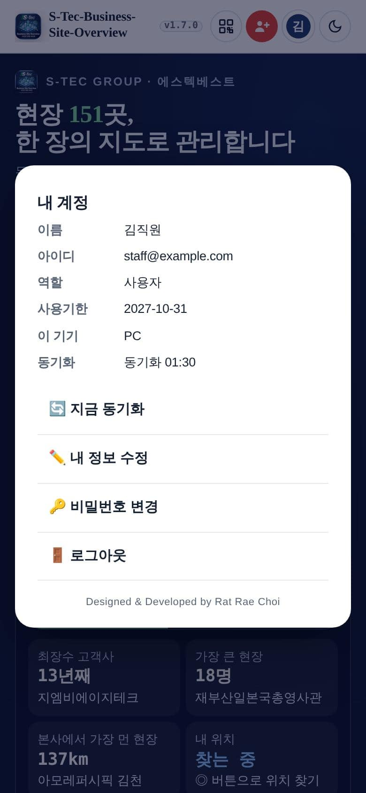
그림 24. 화면
그림 16. 내 계정 메뉴 (휴대폰)
메뉴 | 하는 일 |
|---|---|
🔄 지금 동기화 | 다른 기기에서 바꾼 테마·지도 종류를 바로 받아옴 |
✏️ 내 정보 수정 | 이름·소속·연락처, 이 기기 이름 고치기 |
🔑 비밀번호 변경 | 새 비밀번호로 바꾸기 (8자 이상) |
🚪 로그아웃 | 공용 PC에서는 다 쓴 뒤 꼭 로그아웃 |
함께 쓰는 사이트 · 인트로 영상
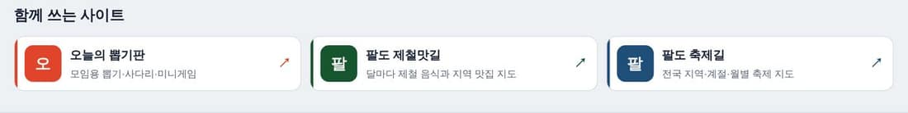
그림 25. 화면
그림 17. 화면 맨 아래 — 함께 쓰는 사이트
- 화면 맨 아래 오늘의 뽑기판 · 팔도 제철맛길 · 팔도 축제길 카드를 누르면 새 창으로 열립니다.
- 메인 화면 인트로 영상 단추를 누르면 처음 소개 영상을 다시 봅니다.
8. 자주 묻는 질문
요점 Designed & Developed by Rat Rae Choi
이럴 때 | 이렇게 하세요 |
|---|---|
내 위치가 안 나와요 | ◎ 내 위치 → GPS(휴대폰) 또는 자동. 위치 권한을 "거부"했다면 휴대폰 설정 → 앱(또는 브라우저) → 권한 → 위치 → 허용. |
PC에서 내 위치가 엉뚱해요 | PC는 IP·Wi-Fi로 대략 잡습니다(시·군~동 단위). 정확한 위치는 휴대폰 GPS를 쓰세요. |
지도 배경이 안 보이고 선만 보여요 | 회사 인터넷이 배경지도를 막은 경우입니다. 경계 지도로 자동 전환됩니다. "카카오"나 "위성"을 눌러 보세요. |
사업장이 하나도 안 보여요 | 검색칸·지사·업무·피규어 필터가 걸려 있는지 확인하고 지우세요. 지도 오른쪽 ⛶ 로 전체 보기. |
전화번호 뒷자리가 ????예요 | 공개판이라 가려진 것입니다. 사내용 앱·파일에서 확인하세요. |
로그인이 안 돼요 | 이메일·비밀번호 확인 → "비밀번호를 잊었어요" 또는 제작자에게 임시 비밀번호 요청. |
"승인 대기 중"에서 안 넘어가요 | 제작자가 승인해야 합니다. 승인 후 "다시 확인". |
사업장 정보가 실제와 달라요 | 제작자에게 알려 주세요. 사업장 주소록을 고쳐 새 버전으로 배포합니다. |
새 버전이 나왔대요 | 웹 주소는 새로고침하면 바로 새 버전. 안드로이드 앱은 새 apk를 받아 덮어 설치. |
Designed & Developed by Rat Rae Choi
Designed & Developed by Rat Rae Choi